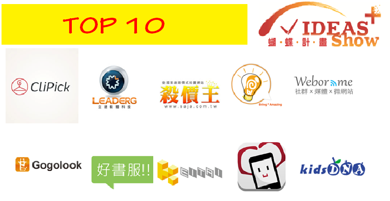
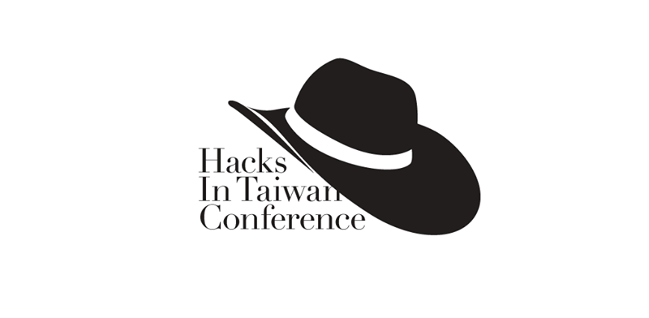
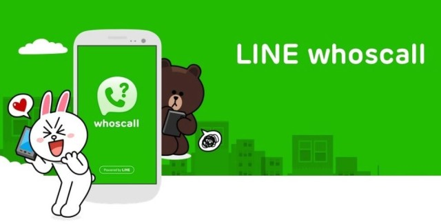

第一次遇見 Gogolook是 2013 Ideas Show + 蝴蝶計劃徵選上，聽著 CFO Jackie介紹著 whoscall來電辨識，當時我在另一個團隊 好書服文創 跟著老闆 Enzo實習，當下我覺得 whoscall這個點子很酷，將來電者的電話送上 Google收尋後回傳，在接電話前得知來電者是誰。最後好書服和 Gogolook都拿下了蝴蝶計劃的前十名，讓我很興奮！

七月的暑假，我參加台灣 HITCON (Hacks In Taiwan Conference)，又再次見到了whoscall身影，看到了中研院 陳昇偉 先生以幽默的口吻對 whoscall來電資料庫進行 Big Data分析，找出潛在的詐騙推銷電話，了解到 whoscall背後的一部份運作原理。

幾天之後，資策會 IDEAS Expo在台大展開，我繼續協助 Enzo，在好書服攤位旁邊介紹著產品，中途因為尿急跑去上廁所，回來攤位時發現手機不見了，問了一下同事才知道 記者正在採訪 whoscall，需要一些手機示範，所以借給了他們。當下我感到無比光榮，Wow!我的手機正被 Gogolook展示著功能耶！這還有種沾光的感覺XD！在記者採訪之後，我走上前不好意思地問了：「請問我可以拿回我的手機嗎？」
這一句話就成了我和 Gogolook第一次的交流。

開學後的某日，我看到 FB訂閱的科技新聞上寫著「LINE 母公司 NAVER 宣布收購 WhosCall 幕後團隊 Gogolook」，我感到非常的驚喜！也非常的感動！馬上分享這則貼文，看到 Gogolook不斷努力後的成果，更告訴了自己
唯有努力和堅持，冒險才會有果實！